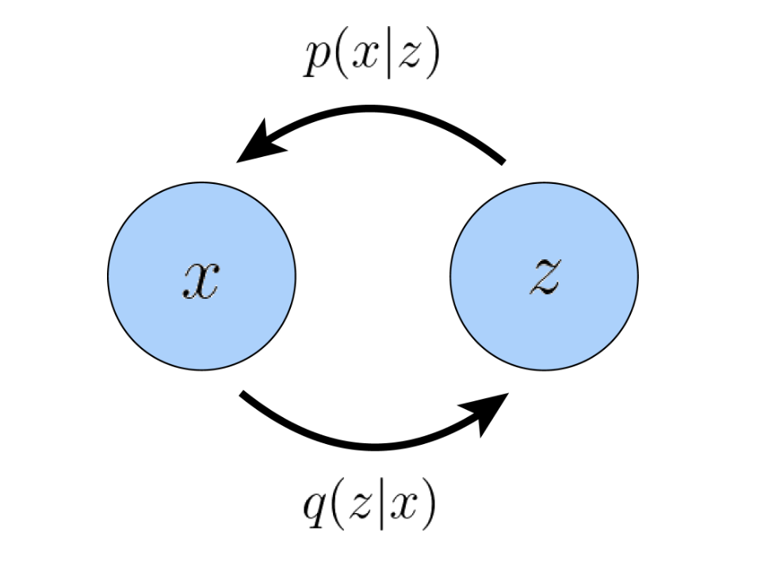
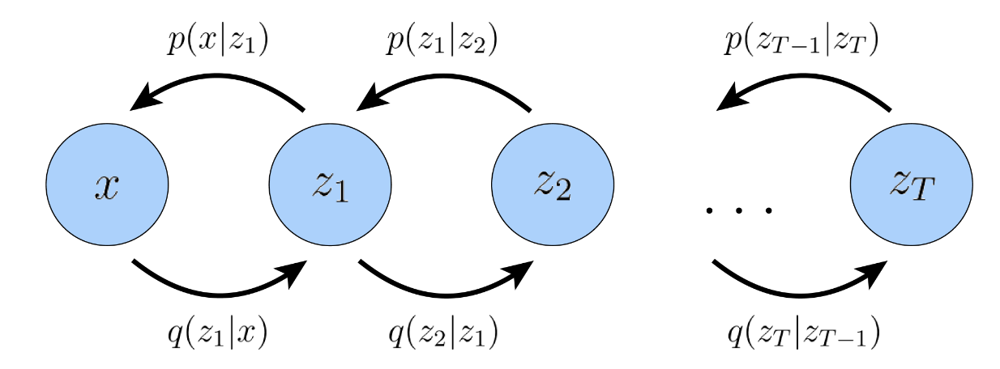
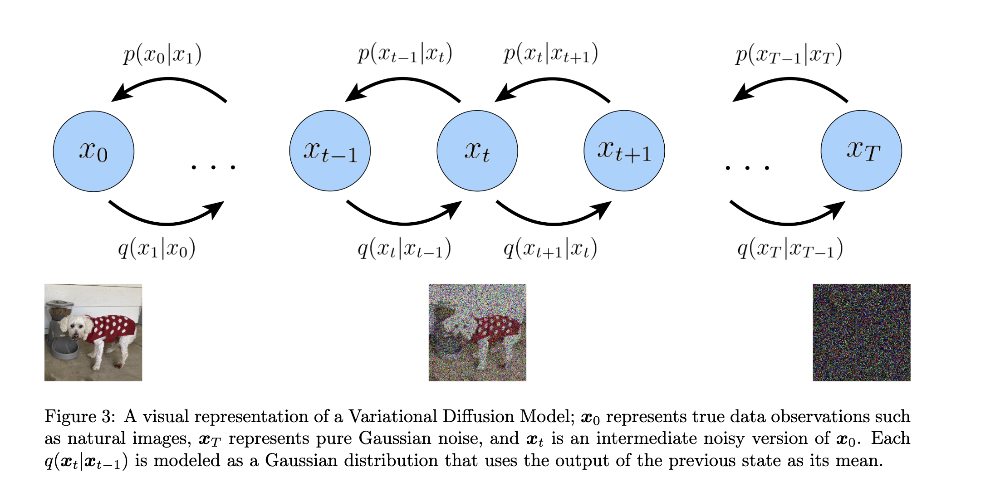
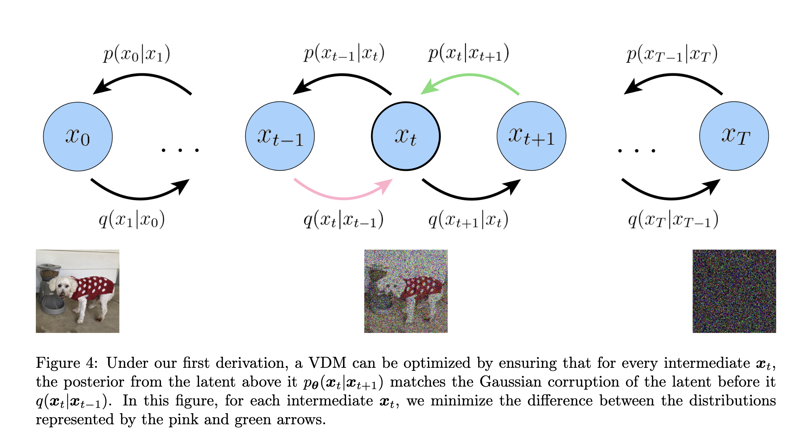
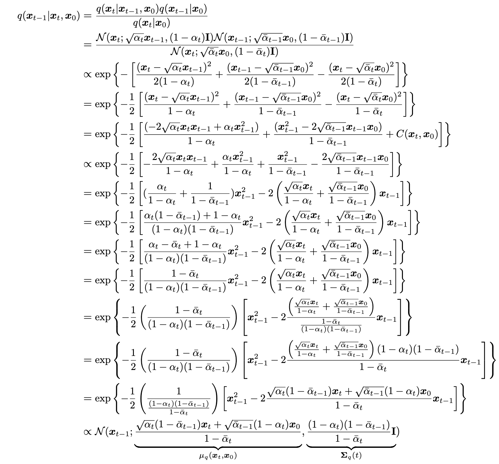

Diffusion
Latent
base assumption: the data/knowledge we learned can be represented by a high/low-dimensional latent space.
尽管这种变量不能被直观的观察到，我们仍可以描述和从中推断。
在尝试建模 latent 的过程中，存在建模高维还是低维数据的选择。大多数偏向其是低维的建模，原因是这是因为如果没有强大的先验知识，试图学习比观察更高维度的表示是徒劳的，另一方面是因为低维数据可以看作是一种压缩的表示，并且可以潜在地揭示描述观察结果的语义上有意义的结构。
ELBO
ELBO means Evidence Lower Bound. It is a lower bound of the log likelihood of the data. It is used in variational inference to approximate the posterior distribution. 对 ELBO 的合理参数化和优化可以逼近实际的后验分布。
形式上定义为：
ELBO ( θ , ϕ ) = E q ϕ ( z ∣ x ) [ log p θ ( x , z ) q ϕ ( z ∣ x ) ] \begin{aligned}
\text{ELBO}(\theta, \phi) = \mathbb{E}_{q_{\phi}(z|x)}[\log \frac{p_{\theta}(x, z)}{q_{\phi}(z|x)}]
\end{aligned}
ELBO ( θ , ϕ ) = E q ϕ ( z ∣ x ) [ log q ϕ ( z ∣ x ) p θ ( x , z ) ]
这里的 p θ ( x , z ) p_{\theta}(x, z) p θ ( x , z ) q ϕ ( z ∣ x ) q_{\phi}(z|x) q ϕ ( z ∣ x ) ϕ \phi ϕ
ELBO 可以看作是一个参数化的模型去评估在给定 observation x x x z z z p ( z ∣ x ) p(z|x) p ( z ∣ x )
下面我们从数学角度来说明为什么 ELBO 是一个合适的优化对象。
log p ( x ) = log ∫ p ( x , z ) d z = log ∫ q ϕ ( z ∣ x ) p ( x , z ) q ϕ ( z ∣ x ) d z = log E q ϕ ( z ∣ x ) [ p ( x , z ) q ϕ ( z ∣ x ) ] ≥ E q ϕ ( z ∣ x ) [ log p ( x , z ) q ϕ ( z ∣ x ) ] \begin{aligned}
\log p(x) &= \log \int p(x, z) dz \\
&= \log \int q_\phi(z|x) \frac{p(x, z)}{q_\phi(z|x)} dz \\
&= \log \mathbb{E}_{q_\phi(z|x)} \left[ \frac{p(x, z)}{q_\phi(z|x)} \right] \\
&\geq \mathbb{E}_{q_\phi(z|x)} \left[ \log \frac{p(x, z)}{q_\phi(z|x)} \right] \\
\end{aligned}
log p ( x ) = log ∫ p ( x , z ) d z = log ∫ q ϕ ( z ∣ x ) q ϕ ( z ∣ x ) p ( x , z ) d z = log E q ϕ ( z ∣ x ) [ q ϕ ( z ∣ x ) p ( x , z ) ] ≥ E q ϕ ( z ∣ x ) [ log q ϕ ( z ∣ x ) p ( x , z ) ]
最后一步是由 Jensen 不等式得到的。这里的 E q ϕ ( z ∣ x ) [ log p ( x , z ) q ϕ ( z ∣ x ) ] \mathbb{E}_{q_\phi(z|x)} \left[ \log \frac{p(x, z)}{q_\phi(z|x)} \right] E q ϕ ( z ∣ x ) [ log q ϕ ( z ∣ x ) p ( x , z ) ]
!!! note 期望
随机变量Z Z Z q ( z ) q(z) q ( z ) E q ( z ) [ f ( Z ) ] = ∫ f ( Z ) q ( z ) d z E_{q(z)}[f(Z)]=\int f(Z)q(z) dz E q ( z ) [ f ( Z )] = ∫ f ( Z ) q ( z ) d z
但是通过 Jensen 不等式只是说明了 ELBO 是一个下界，但是没有说明为什么这个下界可以达到，适合去优化。于是我们可以通过 KL 散度来证明这一点。
!!! note KL 散度
KL 散度是两个分布之间的差异度量。对于两个分布 p ( x ) p(x) p ( x ) q ( x ) q(x) q ( x )
D KL ( p ∣ ∣ q ) = ∫ p ( x ) log p ( x ) q ( x ) d x = E p ( x ) [ log p ( x ) q ( x ) ]
D_\text{KL}(p||q) = \int p(x) \log \frac{p(x)}{q(x)} dx = E_{p(x)}[\log \frac{p(x)}{q(x)}]
D KL ( p ∣∣ q ) = ∫ p ( x ) log q ( x ) p ( x ) d x = E p ( x ) [ log q ( x ) p ( x ) ]
log p ( x ) = log p ( x ) ∫ q ϕ ( z ∣ x ) d z = ∫ q ϕ ( z ∣ x ) log p ( x ) d z = E q ϕ ( z ∣ x ) [ log p ( x ) ] = E q ϕ ( z ∣ x ) [ log p ( x , z ) p ( z ∣ x ) ] = E q ϕ ( z ∣ x ) [ log p ( x , z ) q ϕ ( z ∣ x ) ] + E q ϕ ( z ∣ x ) [ log q ϕ ( z ∣ x ) p ( z ∣ x ) ] = E q ϕ ( z ∣ x ) [ log p ( x , z ) q ϕ ( z ∣ x ) ] + D KL ( q ϕ ( z ∣ x ) ∣ ∣ p ( z ∣ x ) ) = ELBO ( θ , ϕ ) + D KL ( q ϕ ( z ∣ x ) ∣ ∣ p ( z ∣ x ) ) ≥ ELBO ( θ , ϕ ) \begin{aligned}
\log p(x) &= \log p(x) \int q_\phi(z|x) dz \\
&= \int q_\phi(z|x) \log p(x) dz \\
&= \mathbb{E}_{q_\phi(z|x)}[\log p(x)] \\
&= \mathbb{E}_{q_\phi(z|x)}[\log \frac{p(x, z)}{p(z|x)}] \\
&= \mathbb{E}_{q_\phi(z|x)}[\log \frac{p(x, z)}{q_\phi(z|x)}] + \mathbb{E}_{q_\phi(z|x)}[\log \frac{q_\phi(z|x)}{p(z|x)}] \\
&= \mathbb{E}_{q_\phi(z|x)}[\log \frac{p(x, z)}{q_\phi(z|x)}] + D_\text{KL}(q_\phi(z|x) || p(z|x)) \\
&= \text{ELBO}(\theta, \phi) + D_\text{KL}(q_\phi(z|x) || p(z|x))\\
&\geq \text{ELBO}(\theta, \phi)
\end{aligned}
log p ( x ) = log p ( x ) ∫ q ϕ ( z ∣ x ) d z = ∫ q ϕ ( z ∣ x ) log p ( x ) d z = E q ϕ ( z ∣ x ) [ log p ( x )] = E q ϕ ( z ∣ x ) [ log p ( z ∣ x ) p ( x , z ) ] = E q ϕ ( z ∣ x ) [ log q ϕ ( z ∣ x ) p ( x , z ) ] + E q ϕ ( z ∣ x ) [ log p ( z ∣ x ) q ϕ ( z ∣ x ) ] = E q ϕ ( z ∣ x ) [ log q ϕ ( z ∣ x ) p ( x , z ) ] + D KL ( q ϕ ( z ∣ x ) ∣∣ p ( z ∣ x )) = ELBO ( θ , ϕ ) + D KL ( q ϕ ( z ∣ x ) ∣∣ p ( z ∣ x )) ≥ ELBO ( θ , ϕ )
在上面的推导中我们可以看到 KL 散度就是 evidence 与 ELBO 的差值，这说明 ELBO 确实是一个下界

这里我们希望得到的是真实的分布 p ( z ∣ x ) p(z|x) p ( z ∣ x ) q ϕ ( z ∣ x ) q_\phi(z|x) q ϕ ( z ∣ x ) ϕ \phi ϕ ϕ \phi ϕ q ϕ ( z ∣ x ) q_\phi(z|x) q ϕ ( z ∣ x ) p ( z ∣ x ) p(z|x) p ( z ∣ x ) p θ ( x ∣ z ) p_\theta(x|z) p θ ( x ∣ z )
Variational Autoencoder (VAE)
在 default formulation of VAE, 我们直接最大化 ELBO.
variational，因为我们在由 ϕ \phi ϕ ϕ \phi ϕ q ϕ ( z ∣ x ) q_\phi(z|x) q ϕ ( z ∣ x )
autoencoder，因为输入数据在经历中间瓶颈表示步骤后被训练以预测自身
下面来进一步分析 ELBO：
ELBO ( θ , ϕ ) = E q ϕ ( z ∣ x ) [ log p θ ( x , z ) q ϕ ( z ∣ x ) ] = E q ϕ ( z ∣ x ) [ log p θ ( x ∣ z ) ] + E q ϕ ( z ∣ x ) [ log p θ ( z ) q ϕ ( z ∣ x ) ] = E q ϕ ( z ∣ x ) [ log p θ ( x ∣ z ) ] − D KL ( q ϕ ( z ∣ x ) ∣ ∣ p θ ( z ) ) \begin{aligned}
\text{ELBO}(\theta, \phi) &= \mathbb{E}_{q_{\phi}(z|x)}[\log \frac{p_{\theta}(x, z)}{q_{\phi}(z|x)}] \\
&= \mathbb{E}_{q_{\phi}(z|x)}[\log p_{\theta}(x|z)] + \mathbb{E}_{q_{\phi}(z|x)}[\log \frac{p_{\theta}(z)}{q_{\phi}(z|x)}] \\
&= \mathbb{E}_{q_{\phi}(z|x)}[\log p_{\theta}(x|z)] - D_\text{KL}(q_{\phi}(z|x) || p_{\theta}(z))
\end{aligned}
ELBO ( θ , ϕ ) = E q ϕ ( z ∣ x ) [ log q ϕ ( z ∣ x ) p θ ( x , z ) ] = E q ϕ ( z ∣ x ) [ log p θ ( x ∣ z )] + E q ϕ ( z ∣ x ) [ log q ϕ ( z ∣ x ) p θ ( z ) ] = E q ϕ ( z ∣ x ) [ log p θ ( x ∣ z )] − D KL ( q ϕ ( z ∣ x ) ∣∣ p θ ( z ))
在这里，q ϕ ( z ∣ x ) q_\phi(z|x) q ϕ ( z ∣ x ) p θ ( x ∣ z ) p_\theta(x|z) p θ ( x ∣ z )
the first term measures the reconstruction likelihood of the decoder from our variational distribution; this ensures that the learned distribution is modeling effective latents that the original data can be regenerated from. 第一项衡量的是变分分布测量解码器的重建可能性。这确保了学到的分布是在建模有效的潜在变量，原始数据可以从中再生。
The second term measures how similar the learned variational distribution is to a prior belief held over latent variables. 第二项衡量的是学到的分布与实际的分布（prior belief）的相似程度
从公式中我们可以看到，最大化 ELBO 的过程就是在最大化重建概率和最小化 KL 散度。
VAE 的一个决定性特征是如何对参数 ϕ \phi ϕ θ \theta θ
q ϕ ( z ∣ x ) = N ( z ; μ ϕ ( x ) , σ ϕ 2 ( x ) I ) p ( z ) = N ( z ; 0 , I ) \begin{aligned}
q_\phi(z|x) &= \mathcal{N}(z; \mu_\phi(x), \sigma^2_\phi(x)I) \\
p(z) &= \mathcal{N}(z; 0, I) \\
\end{aligned}
q ϕ ( z ∣ x ) p ( z ) = N ( z ; μ ϕ ( x ) , σ ϕ 2 ( x ) I ) = N ( z ; 0 , I )
有了这两个定义，KL 散度项就可以计算了，重建项可以用蒙特卡洛测量来估计。我们的目标可以重写为：
arg max ϕ , θ E q ϕ ( z ∣ x ) [ log p θ ( x ∣ z ) ] − D KL ( q ϕ ( z ∣ x ) ∣ ∣ p θ ( z ) ) ≈ arg max ϕ , θ 1 L ∑ l = 1 L log p θ ( x ∣ z ( l ) ) − D KL ( q ϕ ( z ∣ x ) ∣ ∣ p θ ( z ) ) \begin{aligned}
& \argmax_{\phi,\theta} \mathbb{E}_{q_{\phi}(z|x)}[\log p_{\theta}(x|z)] - D_\text{KL}(q_{\phi}(z|x) || p_{\theta}(z)) \\
\approx & \argmax_{\phi,\theta} \frac{1}{L} \sum_{l=1}^L \log p_{\theta}(x|z^{(l)}) - D_\text{KL}(q_{\phi}(z|x) || p_{\theta}(z))
\end{aligned}
≈ ϕ , θ arg max E q ϕ ( z ∣ x ) [ log p θ ( x ∣ z )] − D KL ( q ϕ ( z ∣ x ) ∣∣ p θ ( z )) ϕ , θ arg max L 1 l = 1 ∑ L log p θ ( x ∣ z ( l ) ) − D KL ( q ϕ ( z ∣ x ) ∣∣ p θ ( z ))
这里的 z ( l ) z^{(l)} z ( l ) q ϕ ( z ∣ x ) q_\phi(z|x) q ϕ ( z ∣ x ) x x x L L L z z z q ϕ ( z ∣ x ) q_\phi(z|x) q ϕ ( z ∣ x )
!!! note reparameterization trick
这个重参数方法是通过引入一个额外的噪声项 ϵ \epsilon ϵ x ∼ N ( μ , σ 2 ) x \sim \mathcal{N}(\mu, \sigma^2) x ∼ N ( μ , σ 2 ) x = μ + σ ϵ x = \mu + \sigma \epsilon x = μ + σ ϵ ϵ ∼ N ( 0 , 1 ) \epsilon \sim \mathcal{N}(0, 1) ϵ ∼ N ( 0 , 1 )
在 VAE 中，我们可以通过以下方式来重参数化：这里 z z z x x x ϵ \epsilon ϵ
z = μ ϕ ( x ) + σ ϕ ( x ) ⊙ ϵ ϵ ∼ N ( 0 , I ) \begin{aligned}
z &= \mu_\phi(x) + \sigma_\phi(x) \odot \epsilon \\
\epsilon &\sim \mathcal{N}(0, I)
\end{aligned}
z ϵ = μ ϕ ( x ) + σ ϕ ( x ) ⊙ ϵ ∼ N ( 0 , I )
这里 ⊙ \odot ⊙ μ \mu μ θ \theta θ
在训练了 VAE 后，可以通过在潜在空间中采样 z z z p θ ( x ∣ z ) p_\theta(x|z) p θ ( x ∣ z )
Hierarchical VAE
Hierarchical VAE 是 VAE 的一种扩展，它通过在潜在空间中引入多个层次的结构来提高建模能力。在这种结构中，每个层次的潜在变量都可以被视为对数据的不同抽象级别的表示，从而允许模型学习更复杂的数据分布。尽管对一般的 HVAE 来说，每个 latent variable 都可以以先前所有的 latent variable 为条件，但是在这里，我们考虑特殊情况——马尔可夫 VAE（ Markovian HVAE (MHVAE)）。这说明每个 latent variable 只依赖于前一个 latent variable。直观来说就是叠很多层的 VAE，每一层的输出作为下一层的输入。

数学上，MHVAE 的表示为：
p ( x , z 1 : T ) = p ( z T ) p θ ( x ∣ z 1 ) ∏ t = 2 T p ( z t − 1 ∣ z t ) q ϕ ( z 1 : T ∣ x ) = q ϕ ( z 1 ∣ x ) ∏ t = 2 T q ϕ ( z t ∣ z t − 1 ) \begin{aligned}
p(x,z_{1:T}) &= p(z_T)p_\theta(x|z_1) \prod_{t=2}^T p(z_{t-1}|z_{t}) \\
q_\phi(z_{1:T}|x) &= q_\phi(z_1|x) \prod_{t=2}^T q_\phi(z_t|z_{t-1})
\end{aligned}
p ( x , z 1 : T ) q ϕ ( z 1 : T ∣ x ) = p ( z T ) p θ ( x ∣ z 1 ) t = 2 ∏ T p ( z t − 1 ∣ z t ) = q ϕ ( z 1 ∣ x ) t = 2 ∏ T q ϕ ( z t ∣ z t − 1 )
我们可以将 ELBO 推广为：
ELBO ( θ , ϕ ) = log E q ϕ ( z 1 : T ∣ x ) [ p θ ( x , z 1 : T ) q ϕ ( z 1 : T ∣ x ) ] ≥ E q ϕ ( z 1 : T ∣ x ) [ log p θ ( x , z 1 : T ) q ϕ ( z 1 : T ∣ x ) ] \begin{aligned}
\text{ELBO}(\theta, \phi) &= \log \mathbb{E}_{q_{\phi}(z_{1:T}|x)}[\frac{p_{\theta}(x, z_{1:T})}{q_{\phi}(z_{1:T}|x)}] \\
&\geq \mathbb{E}_{q_{\phi}(z_{1:T}|x)}[\log \frac{p_{\theta}(x, z_{1:T})}{q_{\phi}(z_{1:T}|x)}]
\end{aligned}
ELBO ( θ , ϕ ) = log E q ϕ ( z 1 : T ∣ x ) [ q ϕ ( z 1 : T ∣ x ) p θ ( x , z 1 : T ) ] ≥ E q ϕ ( z 1 : T ∣ x ) [ log q ϕ ( z 1 : T ∣ x ) p θ ( x , z 1 : T ) ]
然后把上面的定义带入到 ELBO 中，我们可以得到：
E q ϕ ( z 1 : T ∣ x ) [ log p θ ( x , z 1 : T ) q ϕ ( z 1 : T ∣ x ) ] = E q ϕ ( z 1 : T ∣ x ) [ log p ( z T ) p θ x ∣ z 1 ∏ t = 2 T p θ ( z t − 1 ∣ z t ) q ϕ ( z 1 ∣ x ) ∏ t = 2 T q ϕ ( z t ∣ z t − 1 ) ] \mathbb{E}_{q_{\phi}(z_{1:T}|x)}[\log \frac{p_{\theta}(x, z_{1:T})}{q_{\phi}(z_{1:T}|x)}] = \mathbb{E}_{q_{\phi}(z_{1:T}|x)}\left[\log\frac{p(z_T)p_\theta{x|z_1}\prod_{t=2}^Tp_\theta(z_{t-1}|z_t)}{q_\phi(z_1|x)\prod_{t=2}^Tq_\phi(z_t|z_{t-1})}\right]
E q ϕ ( z 1 : T ∣ x ) [ log q ϕ ( z 1 : T ∣ x ) p θ ( x , z 1 : T ) ] = E q ϕ ( z 1 : T ∣ x ) [ log q ϕ ( z 1 ∣ x ) ∏ t = 2 T q ϕ ( z t ∣ z t − 1 ) p ( z T ) p θ x ∣ z 1 ∏ t = 2 T p θ ( z t − 1 ∣ z t ) ]
当我们研究变分扩散模型时，这个目标可以进一步分解为可解释的组件。
Variational Diffusion Models
一种最简单看待 Variational Diffusion Models(VDM) 的方式是将其看作有三个关键约束的 MHVAE。这三个约束是：
The latent dimension is exactly equal to the data dimension
The structure of the latent encoder at each timestep is not learned; it is pre-defined as a linear Gaussian model. In other words, it is a Gaussian distribution centered around the output of the previous timestep
The Gaussian parameters of the latent encoders vary over time in such a way that the distribution of the latent at final timestep T is a standard Gaussian

我们用 x t x_t x t t 0 t_0 t 0 t ∈ [ 1 , T ] t\in[1,T] t ∈ [ 1 , T ]
q ( x 1 : T ∣ x 0 ) = ∏ t = 1 T q ( x t ∣ x t − 1 ) \begin{aligned}
q(x_{1:T}|x_0) = \prod_{t=1}^T q(x_t|x_{t-1})
\end{aligned}
q ( x 1 : T ∣ x 0 ) = t = 1 ∏ T q ( x t ∣ x t − 1 )
根据第二个假设，我们知道每一个 latent variable 分布是以其先前的分层 latent variable 为中心（期望是 latent variable）的高斯分布。每一步的 encoder（加噪过程）都是固定的，均值和标准差可以是预先定义的超参数，也可以作为参数被学习。这个过程的数学表示是：
μ t ( x t ) = α t x t − 1 Σ t ( x t ) = 1 − α t I \begin{aligned}
\mu_t(x_t) = \sqrt{\alpha_t}x_{t-1}\\
\Sigma_t(x_t) = \sqrt{1-\alpha_t}I
\end{aligned}
μ t ( x t ) = α t x t − 1 Σ t ( x t ) = 1 − α t I
这个设计保证方差保持在相似的范围内，也就是说是 variance-preserving.（利用参数控制）
这里的重点是 α t \alpha_t α t
因此，数学上可以表示为
q ( x t ∣ x t − 1 ) = N ( x t ; α t x t − 1 , ( 1 − α t ) I ) q(x_t|x_{t-1})=\mathcal{N}(x_t;\sqrt{\alpha_t}x_{t-1},(1-\alpha_t)I)
q ( x t ∣ x t − 1 ) = N ( x t ; α t x t − 1 , ( 1 − α t ) I )
从第三个假设中可以知道，加噪过程的最终结果是将 latent 变为高斯噪声。那么 VDM 的联合分布可以写成：
p ( x 0 : T = p ( x T ) ∏ t = 1 T p θ ( x t − 1 ∣ x t ) ) p(x_{0:T} = p(x_T)\prod_{t=1}^T p_\theta(x_{t-1}|x_t))
p ( x 0 : T = p ( x T ) t = 1 ∏ T p θ ( x t − 1 ∣ x t ))
其中 p ( x T ) = N ( X T ; 0 , I ) p(x_T) = \mathcal{N}(X_T;0,I) p ( x T ) = N ( X T ; 0 , I )
这组假设描述的是图像输入随时间的稳定噪声；我们通过添加高斯噪声逐渐破坏图像，直到最终它变得与纯高斯噪声完全相同。
注意到我们的 encoder 不再通过 ϕ \phi ϕ p θ ( x t − 1 ∣ x t ) p_\theta(x_{t-1}|x_t) p θ ( x t − 1 ∣ x t )
log p ( x ) ≥ E q ( x 1 : T ∣ x 0 ) [ log p ( x 0 : T ) q ( x 1 : T ∣ x 0 ) ] = E q ( x 1 : T ∣ x 0 ) [ log p ( x T ) ∏ t = 1 T p θ ( x t − 1 ∣ x t ) ∏ t = 1 T q ( x t ∣ x t − 1 ) ] = E q ( x 1 : T ∣ x 0 ) [ log p ( x T ) p θ ( x 0 ∣ x 1 ) ∏ t = 1 T − 1 p θ ( x t ∣ x t + 1 ) q ( x T ∣ x T − 1 ) ∏ t = 1 T − 1 q ( x t ∣ x t − 1 ) ] = E q ( x 1 : T ∣ x 0 ) [ log p ( x T ) p θ ( x 0 ∣ x 1 ) q ( x T ∣ x T − 1 ) ] + E q ( x 1 : T ∣ x 0 ) [ ∑ t = 1 T − 1 log p θ ( x t ∣ x t + 1 ) q ( x t ∣ x t − 1 ) ] = E q ( x 1 : T ∣ x 0 ) [ log p θ ( x 0 ∣ x 1 ) ] + E q ( x 1 : T ∣ x 0 ) [ log p ( x T ) q ( x T ∣ x T − 1 ) ] + ∑ t = 1 T − 1 E q ( x 1 : T ∣ x 0 ) [ log p θ ( x t ∣ x t + 1 ) q ( x t ∣ x t − 1 ) ] = E q ( x 1 ∣ x 0 ) [ log p θ ( x 0 ∣ x 1 ) ] + E q ( x T − 1 , x T ∣ x 0 ) [ log p ( x T ) q ( x T ∣ x T − 1 ) ] + ∑ t = 1 T − 1 E q ( x t − 1 , x t , x t + 1 ∣ x 0 ) [ log p θ ( x t ∣ x t + 1 ) q ( x t ∣ x t − 1 ) ] = E q ( x 1 ∣ x 0 ) [ log p θ ( x 0 ∣ x 1 ) ] − E q ( x T − 1 ∣ x 0 ) [ D K L ( q ( x T ∣ x T − 1 ) ∣ ∣ p ( x T ) ) ] − ∑ t = 1 T − 1 E q ( x t − 1 , x t + 1 ∣ x 0 ) [ D K L ( q ( x t ∣ x t − 1 ) ∣ ∣ p θ ( x t ∣ x t + 1 ) ] ] \begin{aligned}
\log p(x) &\geq \mathbb{E}_{q(x_{1:T}|x_0)}[\log \frac{p(x_{0:T})}{q(x_{1:T}|x_0)}]\\
&= \mathbb{E}_{q(x_{1:T}|x_0)}[\log\frac{p(x_T)\prod_{t=1}^Tp_\theta(x_{t-1}|x_t)}{\prod_{t=1}^Tq(x_t|x_{t-1})}]\\
&= \mathbb{E}_{q(x_{1:T}|x_0)}[\log\frac{p(x_T)p_\theta(x_0|x_1)\prod_{t=1}^{T-1}p_\theta(x_{t}|x_{t+1})}{q(x_T|x_{T-1})\prod_{t=1}^{T-1}q(x_t|x_{t-1})}]\\
&= \mathbb{E}_{q(x_{1:T}|x_0)}[\log\frac{p(x_T)p_\theta(x_0|x_1)}{q(x_T|x_{T-1})}] + \mathbb{E}_{q(x_{1:T}|x_0)}[\sum_{t=1}^{T-1}\log\frac{p_\theta(x_{t}|x_{t+1})}{q(x_t|x_{t-1})}]\\
&= \mathbb{E}_{q(x_{1:T}|x_0)}[\log p_\theta(x_0|x_1)]+\mathbb{E}_{q(x_{1:T}|x_0)}[\log\frac{p(x_T)}{q(x_T|x_{T-1})}] + \sum_{t=1}^{T-1}\mathbb{E}_{q(x_{1:T}|x_0)}[\log\frac{p_\theta(x_{t}|x_{t+1})}{q(x_t|x_{t-1})}]\\
&= \mathbb{E}_{q(x_{1}|x_0)}[\log p_\theta(x_0|x_1)]+\mathbb{E}_{q(x_{T-1},x_T|x_0)}[\log\frac{p(x_T)}{q(x_T|x_{T-1})}] + \sum_{t=1}^{T-1}\mathbb{E}_{q(x_{t-1},x_{t},x_{t+1}|x_0)}[\log\frac{p_\theta(x_{t}|x_{t+1})}{q(x_t|x_{t-1})}]\\
&= \mathbb{E}_{q(x_{1}|x_0)}[\log p_\theta(x_0|x_1)] - \mathbb{E}_{q(x_{T-1}|x_0)}[D_{KL}(q(x_T|x_{T-1})||p(x_T))] \\
& - \sum_{t=1}^{T-1}\mathbb{E}_{q(x_{t-1},x_{t+1}|x_0)}[D_{KL}(q(x_t|x_{t-1})||p_\theta(x_{t}|x_{t+1})]]
\end{aligned}
log p ( x ) ≥ E q ( x 1 : T ∣ x 0 ) [ log q ( x 1 : T ∣ x 0 ) p ( x 0 : T ) ] = E q ( x 1 : T ∣ x 0 ) [ log ∏ t = 1 T q ( x t ∣ x t − 1 ) p ( x T ) ∏ t = 1 T p θ ( x t − 1 ∣ x t ) ] = E q ( x 1 : T ∣ x 0 ) [ log q ( x T ∣ x T − 1 ) ∏ t = 1 T − 1 q ( x t ∣ x t − 1 ) p ( x T ) p θ ( x 0 ∣ x 1 ) ∏ t = 1 T − 1 p θ ( x t ∣ x t + 1 ) ] = E q ( x 1 : T ∣ x 0 ) [ log q ( x T ∣ x T − 1 ) p ( x T ) p θ ( x 0 ∣ x 1 ) ] + E q ( x 1 : T ∣ x 0 ) [ t = 1 ∑ T − 1 log q ( x t ∣ x t − 1 ) p θ ( x t ∣ x t + 1 ) ] = E q ( x 1 : T ∣ x 0 ) [ log p θ ( x 0 ∣ x 1 )] + E q ( x 1 : T ∣ x 0 ) [ log q ( x T ∣ x T − 1 ) p ( x T ) ] + t = 1 ∑ T − 1 E q ( x 1 : T ∣ x 0 ) [ log q ( x t ∣ x t − 1 ) p θ ( x t ∣ x t + 1 ) ] = E q ( x 1 ∣ x 0 ) [ log p θ ( x 0 ∣ x 1 )] + E q ( x T − 1 , x T ∣ x 0 ) [ log q ( x T ∣ x T − 1 ) p ( x T ) ] + t = 1 ∑ T − 1 E q ( x t − 1 , x t , x t + 1 ∣ x 0 ) [ log q ( x t ∣ x t − 1 ) p θ ( x t ∣ x t + 1 ) ] = E q ( x 1 ∣ x 0 ) [ log p θ ( x 0 ∣ x 1 )] − E q ( x T − 1 ∣ x 0 ) [ D K L ( q ( x T ∣ x T − 1 ) ∣∣ p ( x T ))] − t = 1 ∑ T − 1 E q ( x t − 1 , x t + 1 ∣ x 0 ) [ D K L ( q ( x t ∣ x t − 1 ) ∣∣ p θ ( x t ∣ x t + 1 )]]
这里的第一项是重建项，与之前类似。
第二项是先验匹配项，当最终的潜在分布与高斯先验匹配时，它会被最小化。该项不需要优化，因为它没有可训练的参数；此外，由于我们假设 T 足够大，使得最终分布呈高斯分布，因此该项实际上变为零。
第三项是一致性项。它努力使得 x t x_t x t

由于我们必须在所有的 timestep 上进行优化，优化 VDM 的成本主要由第三项决定。
然而，这样得到的 ELBO 可能不是最优的，因为一致性项的计算是通过两个随机变量 x t − 1 , x t + 1 x_{t-1},x_{t+1} x t − 1 , x t + 1 T − 1 T-1 T − 1 q ( x t ∣ x t − 1 ) = q ( x t ∣ x t − 1 , x 0 ) q(x_t|x_{t-1})=q(x_t|x_{t-1},x_0) q ( x t ∣ x t − 1 ) = q ( x t ∣ x t − 1 , x 0 )
q ( x t ∣ x t − 1 , x 0 ) = q ( x t − 1 ∣ x t , x 0 ) q ( x t ∣ x 0 ) q ( x t − 1 , x 0 ) \begin{aligned}
q(x_t|x_{t-1},x_0) &= \frac{q(x_{t-1}|x_t,x_0)q(x_t|x_0)}{q(x_{t-1},x_0)}
\end{aligned}
q ( x t ∣ x t − 1 , x 0 ) = q ( x t − 1 , x 0 ) q ( x t − 1 ∣ x t , x 0 ) q ( x t ∣ x 0 )
有了这个新的约束，我们可以得到一个更好的 ELBO：这中间添加的 q ( x t − 1 ∣ x t , x 0 ) q(x_{t-1}|x_t,x_0) q ( x t − 1 ∣ x t , x 0 )
E q ( x 1 ∣ x 0 ) [ log p θ ( x 0 ∣ x 1 ) ] − D K L ( q ( x T ∣ x 0 ) ∣ ∣ p ( x T ) ) − ∑ t = 2 T E q ( x t ∣ x 0 ) [ D K L ( q ( x t − 1 ∣ x t , x 0 ) ∣ ∣ p θ ( x t − 1 ∣ x t ) ] ] \begin{aligned}
& \mathbb{E}_{q(x_{1}|x_0)}[\log p_\theta(x_0|x_1)] - D_{KL}(q(x_T|x_{0})||p(x_T)) \\
& - \sum_{t=2}^{T}\mathbb{E}_{q(x_{t}|x_0)}[D_{KL}(q(x_{t-1}|x_{t},x_0)||p_\theta(x_{t-1}|x_{t})]]
\end{aligned}
E q ( x 1 ∣ x 0 ) [ log p θ ( x 0 ∣ x 1 )] − D K L ( q ( x T ∣ x 0 ) ∣∣ p ( x T )) − t = 2 ∑ T E q ( x t ∣ x 0 ) [ D K L ( q ( x t − 1 ∣ x t , x 0 ) ∣∣ p θ ( x t − 1 ∣ x t )]]
第二项可以重新解释为最终噪声输入的分布与标准高斯先验的接近程度
第三项可以重新解释为每个去噪步骤的一致性，我们学习所需的去噪转换步骤 p θ ( x t − 1 ∣ x t ) p_\theta(x_{t−1}|x_t) p θ ( x t − 1 ∣ x t ) q ( x t − 1 ∣ x t , x 0 ) q(x_{t−1}|x_t, x_0) q ( x t − 1 ∣ x t , x 0 ) q ( x t − 1 ∣ x t , x 0 ) q(x_{t−1}|x_t, x_0) q ( x t − 1 ∣ x t , x 0 )
由于同时学习编码器增加了复杂性，因此最小化任意复杂马尔可夫 HVAE 中的任意后验分布，每个 KL 散度项很难最小化，在 VDM 中我们可以利用高斯转移假设来使优化变得容易处理：
q ( x t − 1 ∣ x t , x 0 ) = q ( x t ∣ x t − 1 , x 0 ) q ( x t − 1 ∣ x 0 ) q ( x t ∣ x 0 ) q(x_{t-1}|x_t,x_0) = \frac{q(x_t|x_{t-1},x_0)q(x_{t-1}|x_0)}{q(x_{t}|x_0)}
q ( x t − 1 ∣ x t , x 0 ) = q ( x t ∣ x 0 ) q ( x t ∣ x t − 1 , x 0 ) q ( x t − 1 ∣ x 0 )
在这里，我们已经知道 q ( x t ∣ x t − 1 , x 0 ) = N ( x t ; α t x t − 1 , ( 1 − α t ) I ) q(x_t|x_{t-1},x_0)=\mathcal{N}(x_t;\sqrt{\alpha_t}x_{t-1},(1-\alpha_t)I) q ( x t ∣ x t − 1 , x 0 ) = N ( x t ; α t x t − 1 , ( 1 − α t ) I ) q ( x t − 1 ∣ x 0 ) q(x_{t-1}|x_0) q ( x t − 1 ∣ x 0 ) q ( x t ∣ x 0 ) q(x_{t}|x_0) q ( x t ∣ x 0 ) x t ∼ q ( x t ∣ x t − 1 ) x_t \sim q(x_t|x_{t-1}) x t ∼ q ( x t ∣ x t − 1 )
x t = α t x t − 1 + 1 − α t ϵ t x_t = \sqrt{\alpha_t}x_{t-1} + \sqrt{1-\alpha_t}\epsilon_t
x t = α t x t − 1 + 1 − α t ϵ t
同样的，可以从 x t − 1 ∼ q ( x t − 1 ∣ x t − 2 ) x_{t-1} \sim q(x_{t-1}|x_{t-2}) x t − 1 ∼ q ( x t − 1 ∣ x t − 2 )
x t − 1 = α t − 1 x t − 2 + 1 − α t − 1 ϵ t − 1 x_{t-1} = \sqrt{\alpha_{t-1}}x_{t-2} + \sqrt{1-\alpha_{t-1}}\epsilon_{t-1}
x t − 1 = α t − 1 x t − 2 + 1 − α t − 1 ϵ t − 1
因此，可以通过递归这一操作得到 x t ∼ q ( x t ∣ x 0 ) x_t \sim q(x_t|x_0) x t ∼ q ( x t ∣ x 0 )
x t = α t x t − 1 + 1 − α t ϵ t − 1 ∗ = α t ( α t − 1 x t − 2 + 1 − α t − 1 ϵ t − 2 ∗ ) + 1 − α t ϵ t − 1 ∗ = α t α t − 1 x t − 2 + α t − α t α t − 1 2 + 1 − α t 2 ϵ t − 2 = α t α t − 1 x t − 2 + 1 − α t α t − 1 ϵ t − 2 = . . . = ∏ i = 1 t α i x 0 + 1 − ∏ i = 1 t α i ϵ 0 = α ˉ t x 0 + 1 − α ˉ t ϵ 0 ∼ N ( x t ; α ˉ t x 0 , 1 − α ˉ t I ) \begin{aligned}
x_t &= \sqrt{\alpha_t}x_{t-1} + \sqrt{1-\alpha_t}\epsilon^*_{t-1} \\
&= \sqrt{\alpha_t}(\sqrt{\alpha_{t-1}}x_{t-2} + \sqrt{1-\alpha_{t-1}}\epsilon^*_{t-2}) + \sqrt{1-\alpha_t}\epsilon^*_{t-1} \\
&=\sqrt{\alpha_t\alpha_{t-1}}x_{t-2} + \sqrt{\sqrt{\alpha_t-\alpha_t\alpha_{t-1}}^2+\sqrt{1-\alpha_t}^2}\epsilon_{t-2}\\
&= \sqrt{\alpha_t\alpha_{t-1}}x_{t-2} + \sqrt{1-\alpha_t\alpha_{t-1}}\epsilon_{t-2} \\
&= ... \\
& = \sqrt{\prod_{i=1}^{t}\alpha_i}x_0 + \sqrt{1-\prod_{i=1}^{t}\alpha_i}\epsilon_0 \\
& = \sqrt{\bar{\alpha}_t}x_0 + \sqrt{1-\bar{\alpha}_t}\epsilon_0 \\
& \sim \mathcal{N}(x_t;\sqrt{\bar{\alpha}_t}x_0,\sqrt{1-\bar{\alpha}_t}I)
\end{aligned}
x t = α t x t − 1 + 1 − α t ϵ t − 1 ∗ = α t ( α t − 1 x t − 2 + 1 − α t − 1 ϵ t − 2 ∗ ) + 1 − α t ϵ t − 1 ∗ = α t α t − 1 x t − 2 + α t − α t α t − 1 2 + 1 − α t 2 ϵ t − 2 = α t α t − 1 x t − 2 + 1 − α t α t − 1 ϵ t − 2 = ... = i = 1 ∏ t α i x 0 + 1 − i = 1 ∏ t α i ϵ 0 = α ˉ t x 0 + 1 − α ˉ t ϵ 0 ∼ N ( x t ; α ˉ t x 0 , 1 − α ˉ t I )
中间用到了所有的噪声都是独立同分布的，利用了高斯分布的特性。
现在我们已经得到了前面贝叶斯形式的去噪过程所需要的全部项，现在来推导最后的去噪声过程

因此，我们证明了在每一步中 x t − 1 ∼ q ( x t − 1 ∣ x t , x 0 ) x_{t-1}\sim q(x_{t-1}|x_t,x_0) x t − 1 ∼ q ( x t − 1 ∣ x t , x 0 ) μ q ( x t , x 0 ) \mu_q(x_t,x_0) μ q ( x t , x 0 ) x t x_t x t x 0 x_0 x 0 Σ q ( t ) \Sigma_q(t) Σ q ( t ) α \alpha α α \alpha α
这里两个关键的参数是
μ q ( x t , x 0 ) = α t ( 1 − α t − 1 ‾ ) x t + α t − 1 ‾ ( 1 − α t ) x 0 1 − α t ‾ \mu_q(x_t,x_0) = \frac{\sqrt{\alpha_t(1-\overline{\alpha_{t-1}})x_t}+\sqrt{\overline{\alpha_{t-1}}}(1-\alpha_t)x_0}{1-\overline{\alpha_t}}
μ q ( x t , x 0 ) = 1 − α t α t ( 1 − α t − 1 ) x t + α t − 1 ( 1 − α t ) x 0
σ q ( t ) 2 = ( 1 − α t ) ( 1 − α t − 1 ‾ ) 1 − α t ‾ \sigma_q(t)^2 = \frac{(1-\alpha_t)(1-\overline{\alpha_{t-1}})}{1-\overline{\alpha_{t}}}
σ q ( t ) 2 = 1 − α t ( 1 − α t ) ( 1 − α t − 1 )
从两个正态分布的 KL 散度的变换出发：
arg min θ D KL ( q ( x t − 1 ∣ x t , x 0 ) ∣ ∣ p θ ( x t − 1 ∣ x t ) ) = arg min θ 1 2 ( log ∣ Σ p θ ∣ ∣ Σ q ∣ − d + tr ( Σ p θ − 1 Σ q ) + ( μ p θ − μ q ) T Σ p θ − 1 ( μ p θ − μ q ) ) = arg min θ 1 2 σ q 2 ( t ) ∥ μ θ − μ q ∥ 2 2 \begin{aligned}
& \argmin_\theta D_{\text{KL}}(q(x_{t-1}|x_t,x_0)||p_\theta(x_{t-1}|x_t)) \\
&= \argmin_\theta \frac{1}{2}(\log\frac{|\Sigma_{p_\theta}|}{|\Sigma_q|} - d + \text{tr}(\Sigma_{p_\theta}^{-1}\Sigma_q) + (\mu_{p_\theta}-\mu_q)^T\Sigma_{p_\theta}^{-1}(\mu_{p_\theta}-\mu_q)) \\
&= \arg \min_{\theta} \frac{1}{2 \sigma_q^2(t)} \left\| \mu_\theta - \mu_q \right\|_2^2
\end{aligned}
θ arg min D KL ( q ( x t − 1 ∣ x t , x 0 ) ∣∣ p θ ( x t − 1 ∣ x t )) = θ arg min 2 1 ( log ∣ Σ q ∣ ∣ Σ p θ ∣ − d + tr ( Σ p θ − 1 Σ q ) + ( μ p θ − μ q ) T Σ p θ − 1 ( μ p θ − μ q )) = arg θ min 2 σ q 2 ( t ) 1 ∥ μ θ − μ q ∥ 2 2
这里 μ q = μ q ( x t , x 0 ) , μ θ = μ θ ( x t , t ) \mu_q = \mu_q(x_t,x_0),\mu_\theta=\mu_\theta(x_t,t) μ q = μ q ( x t , x 0 ) , μ θ = μ θ ( x t , t )
根据前面的推导，我们可以将 μ θ ( x t , t ) \mu_\theta(x_t,t) μ θ ( x t , t ) μ q ( x t , x 0 ) \mu_q(x_t,x_0) μ q ( x t , x 0 )
μ θ ( x t , t ) = α t ( 1 − α t − 1 ‾ ) x t + α t − 1 ‾ ( 1 − α t ) x θ ^ ( x t , t ) 1 − α t ‾ \begin{aligned}
\mu_\theta(x_t,t)=\frac{\sqrt{\alpha_t}(1-\overline{\alpha_{t-1}})x_t+\sqrt{\overline{\alpha_{t-1}}}(1-\alpha_t)\hat{x_\theta}(x_t,t)}{1-\overline{\alpha_{t}}}
\end{aligned}
μ θ ( x t , t ) = 1 − α t α t ( 1 − α t − 1 ) x t + α t − 1 ( 1 − α t ) x θ ^ ( x t , t )
这里 x θ ^ ( x t , t ) \hat{x_\theta}(x_t,t) x θ ^ ( x t , t ) x t x_t x t t t t x 0 x_0 x 0
那么对 KL 散度的优化可以转化为
arg min θ D KL ( q ( x t − 1 ∣ x t , x 0 ) ∣ ∣ p θ ( x t − 1 ∣ x t ) ) = arg min θ 1 2 σ q 2 ( t ) α t − 1 ‾ ( 1 − α t ) 2 ( 1 − α t ‾ ) 2 [ ∥ x θ ^ ( x t , t ) − x 0 ∥ 2 2 ] \begin{aligned}
& \argmin_\theta D_{\text{KL}}(q(x_{t-1}|x_t,x_0)||p_\theta(x_{t-1}|x_t)) \\
& = \arg \min_{\theta} \frac{1}{2 \sigma_q^2(t)} \frac{\overline{\alpha_{t-1}}(1-\alpha_t)^2}{(1-\overline{\alpha_{t}})^2}[\left\|\hat{x_\theta}(x_t,t)-x_0\right\|^2_2]
\end{aligned}
θ arg min D KL ( q ( x t − 1 ∣ x t , x 0 ) ∣∣ p θ ( x t − 1 ∣ x t )) = arg θ min 2 σ q 2 ( t ) 1 ( 1 − α t ) 2 α t − 1 ( 1 − α t ) 2 [ ∥ x θ ^ ( x t , t ) − x 0 ∥ 2 2 ]
此外，最小化我们导出的 ELBO 目标在所有噪声水平上的求和项可以通过最小化所有时间步长的期望来近似：
arg min θ E t ∼ U 2 , T [ E q ( x t ∣ x 0 ) [ D KL ( q ( x t − 1 ∣ x t , x 0 ) ∣ ∣ p θ ( x t − 1 ∣ x t ) ) ] ] \argmin_\theta \mathbb{E}_{t\sim U{2,T}}[\mathbb{E}_{q(x_t|x_0)}[D_{\text{KL}}(q(x_{t-1}|x_t,x_0)||p_\theta(x_{t-1}|x_t))]]
θ arg min E t ∼ U 2 , T [ E q ( x t ∣ x 0 ) [ D KL ( q ( x t − 1 ∣ x t , x 0 ) ∣∣ p θ ( x t − 1 ∣ x t ))]]
然后可以使用随时间步长的随机样本进行优化。
Learning Diffusion Noise parameters
一个可能的方式是通过以 η \eta η α ^ η ( t ) \hat{\alpha}_\eta(t) α ^ η ( t ) α t \alpha_t α t α ˉ t \bar{\alpha}_t α ˉ t
将先前得到的 σ q 2 ( t ) \sigma_q^2(t) σ q 2 ( t )
1 2 σ q 2 ( t ) α t − 1 ‾ ( 1 − α t ) 2 ( 1 − α t ‾ ) 2 [ ∥ x θ ^ ( x t , t ) − x 0 ∥ 2 2 ] = 1 2 ( 1 − α t ) ( 1 − α t − 1 ‾ ) 1 − α t ‾ α t − 1 ‾ ( 1 − α t ) 2 ( 1 − α t ‾ ) 2 [ ∥ x θ ^ ( x t , t ) − x 0 ∥ 2 2 ] = 1 2 ( α t − 1 ‾ 1 − α t − 1 ‾ − α t ‾ 1 − α t ‾ ) [ ∥ x θ ^ ( x t , t ) − x 0 ∥ 2 2 ] \begin{aligned}
&\frac{1}{2 \sigma_q^2(t)} \frac{\overline{\alpha_{t-1}}(1-\alpha_t)^2}{(1-\overline{\alpha_{t}})^2}[\left\|\hat{x_\theta}(x_t,t)-x_0\right\|^2_2] \\
&=\frac{1}{2\frac{(1-\alpha_t)(1-\overline{\alpha_{t-1}})}{1-\overline{\alpha_{t}}}}\frac{\overline{\alpha_{t-1}}(1-\alpha_t)^2}{(1-\overline{\alpha_{t}})^2}[\left\|\hat{x_\theta}(x_t,t)-x_0\right\|^2_2]\\
&=\frac{1}{2}\left(\frac{\overline{\alpha_{t-1}}}{1-\overline{\alpha_{t-1}}}-\frac{\overline{\alpha_{t}}}{1-\overline{\alpha_{t}}}\right)[\left\|\hat{x_\theta}(x_t,t)-x_0\right\|^2_2]
\end{aligned}
2 σ q 2 ( t ) 1 ( 1 − α t ) 2 α t − 1 ( 1 − α t ) 2 [ ∥ x θ ^ ( x t , t ) − x 0 ∥ 2 2 ] = 2 1 − α t ( 1 − α t ) ( 1 − α t − 1 ) 1 ( 1 − α t ) 2 α t − 1 ( 1 − α t ) 2 [ ∥ x θ ^ ( x t , t ) − x 0 ∥ 2 2 ] = 2 1 ( 1 − α t − 1 α t − 1 − 1 − α t α t ) [ ∥ x θ ^ ( x t , t ) − x 0 ∥ 2 2 ]
!!! note SNR
SNR means signal-to-noise ratio SNR = μ 2 σ 2 \text{SNR}=\frac{\mu^2}{\sigma^2} SNR = σ 2 μ 2
根据前面的推导，q ( x t ∣ x 0 ) ∼ N ( x t ; α t ‾ x 0 , ( 1 − α t ‾ ) I ) q(x_t|x_0) \sim \mathcal{N}(x_t;\sqrt{\overline{\alpha_t}}x_0,(1-\overline{\alpha_t})I) q ( x t ∣ x 0 ) ∼ N ( x t ; α t x 0 , ( 1 − α t ) I )
SNR ( t ) = α t ‾ 1 − α t ‾ \text{SNR}(t) =\frac{\overline{\alpha_{t}}}{1-\overline{\alpha_{t}}}
SNR ( t ) = 1 − α t α t
那么前面的公式就可以转化为
1 2 ( α t − 1 ‾ 1 − α t − 1 ‾ − α t ‾ 1 − α t ‾ ) [ ∥ x θ ^ ( x t , t ) − x 0 ∥ 2 2 ] = 1 2 ( SNR ( t − 1 ) − SNR ( t ) ) [ ∥ x θ ^ ( x t , t ) − x 0 ∥ 2 2 ] \begin{aligned}
&\frac{1}{2}\left(\frac{\overline{\alpha_{t-1}}}{1-\overline{\alpha_{t-1}}}-\frac{\overline{\alpha_{t}}}{1-\overline{\alpha_{t}}}\right)[\left\|\hat{x_\theta}(x_t,t)-x_0\right\|^2_2] \\
&=\frac{1}{2}(\text{SNR}(t-1)-\text{SNR}(t))[\left\|\hat{x_\theta}(x_t,t)-x_0\right\|^2_2]
\end{aligned}
2 1 ( 1 − α t − 1 α t − 1 − 1 − α t α t ) [ ∥ x θ ^ ( x t , t ) − x 0 ∥ 2 2 ] = 2 1 ( SNR ( t − 1 ) − SNR ( t )) [ ∥ x θ ^ ( x t , t ) − x 0 ∥ 2 2 ]
顾名思义，SNR 表示原始信号与存在的噪声量之间的比率；较高的 SNR 表示较多的信号，较低的 SNR 表示较多的噪声。在扩散模型中我们要求SNR随着时间步t的增加而单调减小；这形式化了这样一个概念：受扰动的输入 x t x_t x t t = T t = T t = T
根据前面的推导，我们可以使用神经网络直接参数化每个时间步的 SNR，并与扩散模型一起联合学习。由于 SNR 必须随时间单调下降，我们可以将其表示为：
SNR ( t ) = exp ( − ω η ( t ) ) \text{SNR}(t) = \exp(-\omega_\eta(t))
SNR ( t ) = exp ( − ω η ( t ))